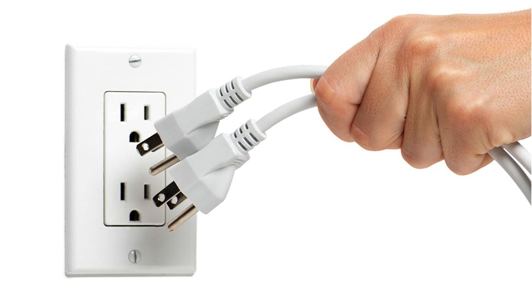
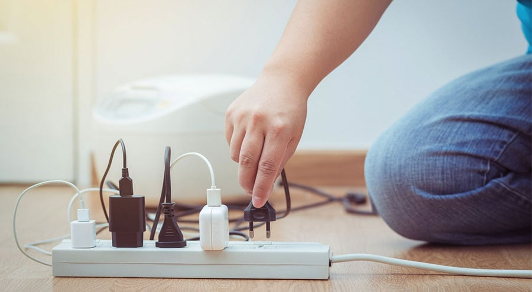

| Ways to prevent a fire | |
|---|---|
|  Unplug Items You’re Not Using |
Excess electricity flowing through items in your home can always be a potential fire hazard. Things like computers, TVs, game systems and a whole lot more use electricity even when they’re not on. That means they can always experience a surge or they can just overheat and cause a fire. The continuous electricity that’s flowing into them provides them with a source for a fire as well. By unplugging these items when you’re not using them and, therefore, not paying attention to them, you can cut down on your chances of a fire. |
|  Use Surge Protectors |
At the very least, you want to make sure that all of your electronics are plugged into surge protectors. A surge in power is when you are most likely to experience an electrical fire and by plugging items into a surge protector you don’t have to worry about that excess electricity getting to the item and causing a fire. The surge protector keeps that extra out and can definitely reduce your risk of having a fire in the first place or the strength of it if you do get one. |
 Keep Flammable Items Away From Heat |
Flammable items like fabrics, paper, and even hair should always be kept away from excessive heat or flame. You want to keep your hair and your clothes out of the way when you’re starting a fire in your fireplace. You want to keep the stack of papers away from your wax melter. You also want to make sure that you’re watching closely for anything that could turn into a problem. You don’t want a fire to pop up anywhere and that means watching heat sources and anything close to them. |
 Don’t Smoke In the Home |
If you do smoke, it’s important to always do so in a well-ventilated area and to completely put out the cigarette before you throw it away. Cigarettes have a variety of additives and materials inside of them that can continue to burn even if you think that you’ve put them out. That flame can then ignite inside your trashcan or outside your home and cause a fire. If you make sure to smoke outside, watching out for stray ashes and you make sure to put the cigarette out entirely before throwing it away you can cut down on this risk. |